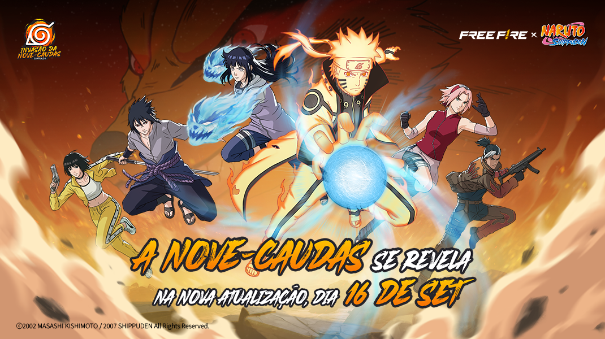

Notícias do Free Fire

Parede de Gel - Monumento Hokage chega ao Bazar do Drop
Nova rotação reportada para o Brasil fica disponível de 7 a 15 de outubro.
Ler matéria →Free Fire tem 5 recompensas de Codiguin em outubro
Lista divulgada via programa FFCP reúne cinco recompensas para outubro de 2026.
Ler matéria →Loja de outubro recebe Conjunto Zephyr, Senhor dos Ventos
Rotação reportada para o Brasil começou em 1º de outubro e tem previsão até 30 de outubro.
Ler matéria →O Oculto pode ser o evento de Halloween da OB55
Conteúdo visto em testes aponta evento de terror em outubro; chegada ao Brasil ainda não foi confirmada.
Ler matéria →Bazar do Drop recebe Rasengan em nova rotação
Seleção reportada para o servidor brasileiro fica disponível de 3 a 11 de outubro.
Ler matéria →Trilha Turbo com Rock Lee e itens de NARUTO
Rotação temática foi identificada em dados do jogo e é tratada como informação reportada.
Ler matéria →Vira-Carta com Conjunto Sasuke segue ativo até 15 de outubro
Calendário especializado reporta Conjunto Sasuke, Groza - Sasuke e Conjunto Bermuda Angelical na rotação.
Ler matéria →Virada Suprema recebe Punho - Raio do Ninjutsu
Nova rotação reportada para o servidor brasileiro fica disponível até 15 de outubro.
Ler matéria →Passe Booyah: Guardiões do Oeste
Temporada de outubro traz o tema do Velho Oeste e progressão Premium.
Ler matéria →M7, Skorp, RPK e Harpia chegam na etapa de outubro da OB55
A Garena marcou para 1º de outubro a estreia das quatro armas no Contra Squad e novas fontes de loot no Battle Royale.
Ler matéria →Airdrops viram meteoros e Máquinas de Vendas ganham descontos
A etapa de 1º de outubro adiciona dois eventos aleatórios e ajustes nos airdrops do Battle Royale.
Ler matéria →Loja Prime de outubro traz Conjunto Cobra: Modo Fúria
Seleção reportada para outubro reúne seis itens; valores e disponibilidade devem ser conferidos dentro do jogo.
Ler matéria →Misha deixa de ter efeito no cavalo em mudança de outubro
A alteração foi reportada por fonte parceira do programa de criadores; confira os detalhes e a origem da informação.
Ler matéria →MP40, UMP, Vector, M1887 e M590: mudanças da OB55
Ajustes de alcance, mobilidade, dano e precisão na etapa de outubro.
Ler matéria →Bazar do Drop com Nove-Caudas segue disponível
A rotação brasileira começou em 30 de setembro e tem término reportado para 13 de outubro.
Ler matéria →Invasão da Nove-Caudas continua ativa até 15 de outubro
Hinata, Academia Ninja, novas mecânicas e recompensas fazem parte da colaboração oficial.
Ler matéria →Simples para navegar. Fácil para acompanhar.
O FRIFAS BRASIL reúne notícias, atualizações, eventos, campeonatos e guias em um portal independente, organizado e direto para a comunidade brasileira de Free Fire.